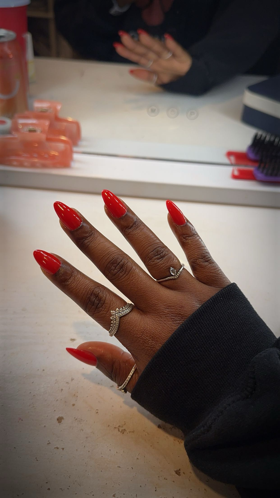
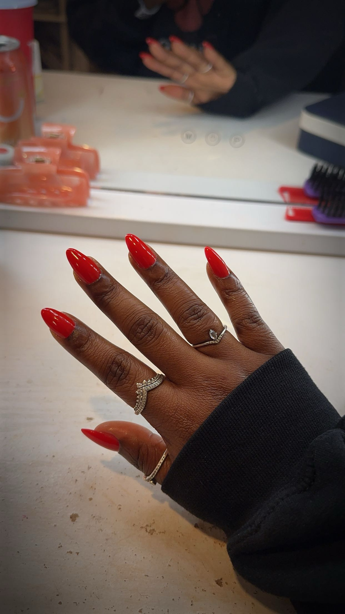

More About Me
Hello! I'm D'Lani Sweeney, and I'm passionate about doing my own nails! This website is dedicated to sharing more about doing your own gel-x nails at home. I started being interested in doing my own nails since my freshman year of college. I moved away from home and my usual nail spot and realized that when you add it up, it costs a lot of money to regularly get your nails done at a salon. So, I found some starter videos on TikTok on how to start yourself and all the basic tools you need and ordered them all easily on Amazon. Since then, I’ve just been practicing and getting better, and I have even done family and friends' nails too. Since I started, I’ve been doing my own nails for 4 years now, and I have really improved. It has become my favorite hobby, and when I do my nails, it gives me some peaceful me-time while also stimulating my brain by allowing me to use my artistic abilities to draw and create designs. Here you will find a collection of images of some of my favorite nail designs that I have created. I hope you enjoy it!
The Process of Doing Gel-X Nails
The process of doing my Gel-X nails starts with making sure my natural nails are prepared properly, which includes cleaning and filing them and preparing my cuticles. After that, I apply a base coat of glue and cure it under a UV lamp. The Gel-X system involves applying soft gel extensions, which I find to be a great alternative to acrylics. The extensions are gentle on my nails while still giving me the strength I want and last for the same amount of time.
After the extensions are in place, I focus on my favorite part—designing the nails! This is when I get to experiment with colors, patterns, and designs. One of my favorite things to do is create themed nail art for different holidays—like spooky designs for Halloween, sparkles for New Year’s, or festive designs for Christmas. I also love to play around with different color palettes and designs whenever I’m about to go on vacation. It’s a fun way to match my nails to the mood and vibe of my trips!
Each set takes time and care, but I love the process from start to finish, and it’s amazing to see how much my nail art skills have grown over the years!
- Gel-X takes time and patience
- Gel-X is a lot healtheir and doesnt destroy your nail beds
- Anyone can start and can easily get starter kits online at Amazon!
 
